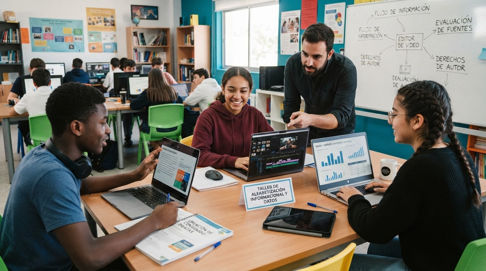

Alfabetización en información y datos: búsqueda de información en Internet, evaluación de fuentes confiables, organización y almacenamiento de información digital, uso ético de la información y derechos de autor.
Creación de contenido digital: elaboración de documentos, presentaciones, infografías e imágenes utilizando herramientas digitales como Canva, Google Docs, Google Slides y Microsoft PowerPoint.

Diseñar una página web educativa que fortalezca las competencias de alfabetización en información y datos y de creación de contenido digital en los estudiantes de Primero de Bachillerato de la Unidad Educativa Celica, mediante recursos interactivos que favorezcan el aprendizaje autónomo y el desarrollo de habilidades digitales.
El presente recurso educativo innovador se diseña en respuesta a las necesidades identificadas en la recopilación de información mediante las encuetas realizadas a los estudiantes de los Primeros Años de Bachillerato de la Unidad Educativa Celica, donde se evidenciaron limitaciones en las competencias de alfabetización en información en información y datos y en la creación de contenido digital. Estas dificultades afectan la capacidad de los estudiantes para buscar, seleccionar, evaluar y utilizar información de manera crítica, así como para elaborar contenidos digitales que favorezcan su proceso de aprendizaje.